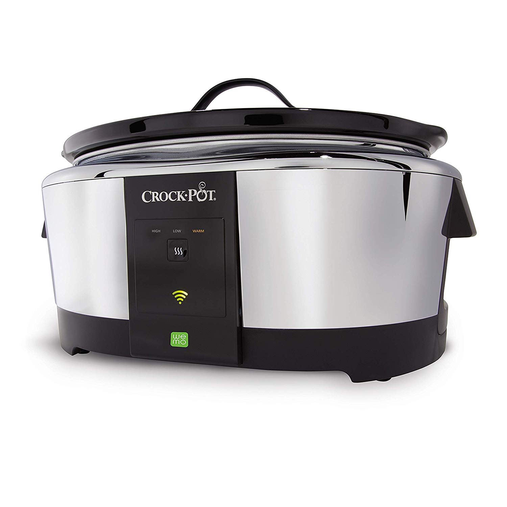
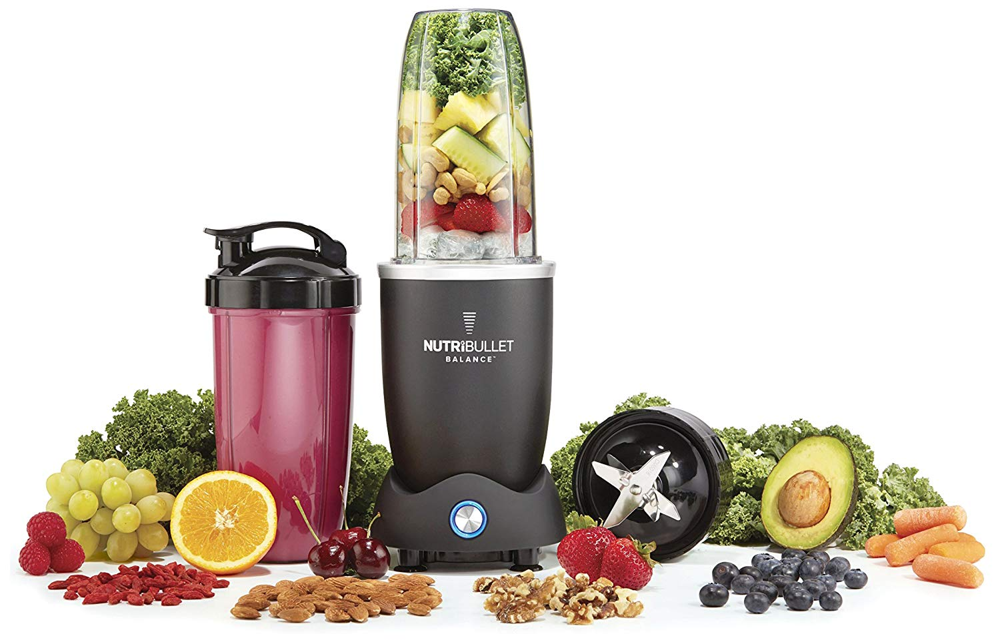
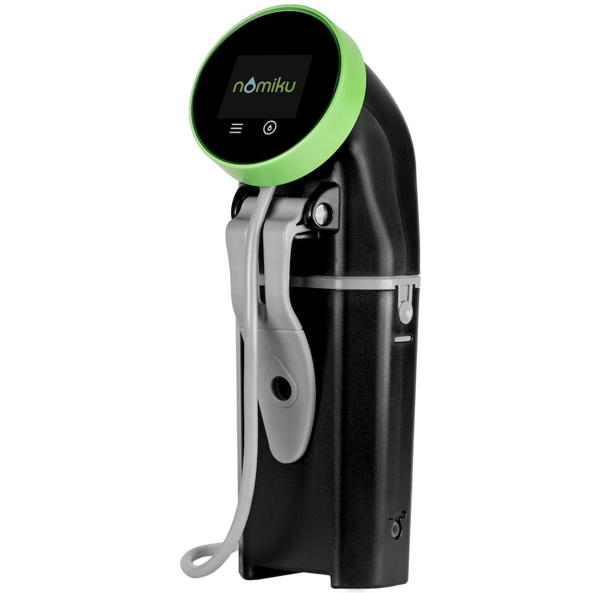

Welcome to the smart home store for all things kitchen, where you'll find great prices on a variety of products to help you cook the perfect meal!.
Smart Home | Kitchen

Crock-Pot SCCPWM600-V2 6-Quart WeMo-Enabled Smart Slow Cooker, Stainless Steel
Price : $506.00
- Crock-Pot and Belkin, the innovator of WeMo, bring you a state-of-the-art slow cooker that's designed to provide
remote access to your home appliances.
- Adjust cooking time, temperature, shift to warm, or turn appliance on and off using the WeMo App from your smart device.
- This appliance does not need to be connected to Wi-Fi in order to be used. Wi-Fi connection is necessary only
when controlling appliance remotely.
- High and Low temperature settings, with Warm feature.

NutriBullet Balance, Bluetooth Enabled Smart Blender
Price : $247.00
- NutriBullet Balance connects to NutriBullet Balance app on your smart device.
- Set and track personal nutrition goals, track pantry items, and customize shopping Lists.
- Built-in, Bluetooth smart nutrition sensor enables the connection to the NutriBullet Balance app and calculates
the exact nutritional value of your smoothie.

Nomiku WiFi Sous Vide 1100 Watt Immersion Circulator
Price : $169.00
- Nomiku Wifi Sous Vide Immersion Circulator is the first wifi-connected sous vide device that lets you create and send
recipes directly to the machine, and precisely control your temperature from your smart phone.
- Intitutive design simply turn the knob to set the water temperature. Clip onto any pot to instantly turn it into a precise
temperature-controlled water bath to perfectly cook your meats, fish, vegetables, and desserts.
- Uses with a 1,100 watt semiconductor heater that never burns out, all in a compact size that easily fits into your kitchen drawer.